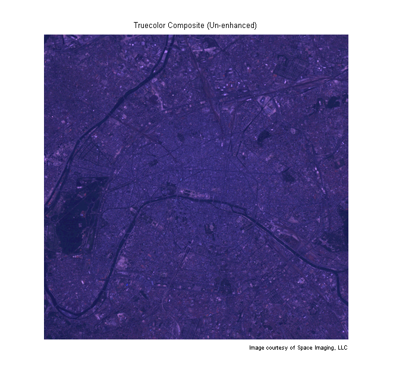
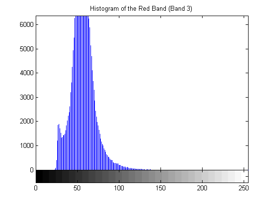
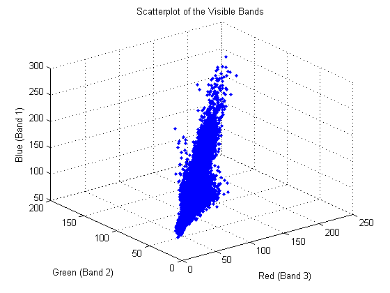
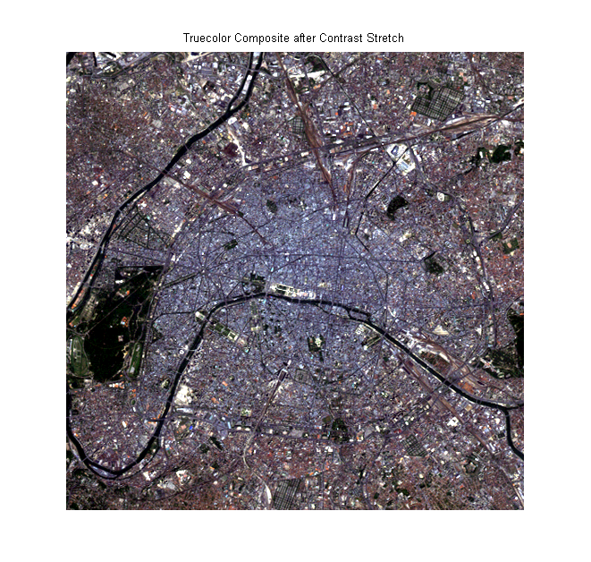
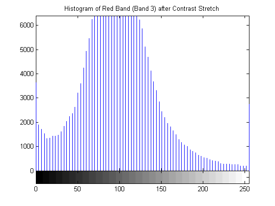
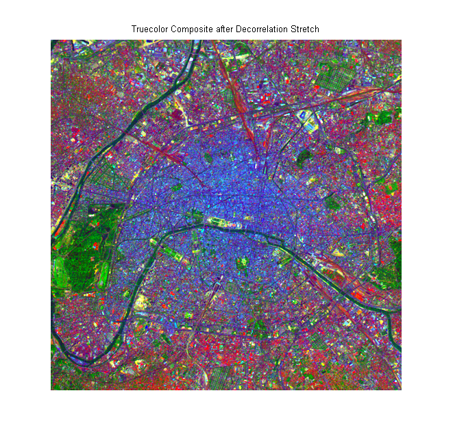
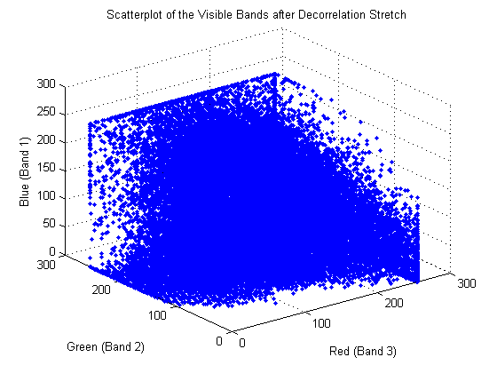
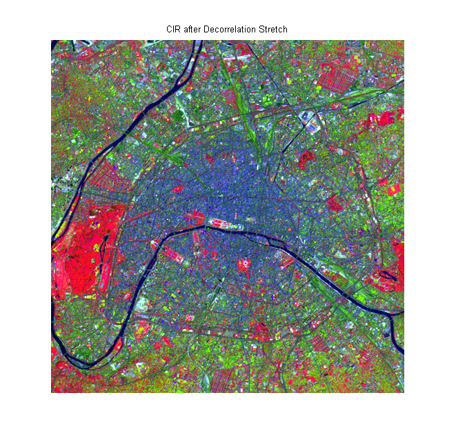

It is often necessary to enhance multispectral radiance or reflectance data to create an image that is suitable for visual interpretation.
This example illustrates some basic image composition and enhancement techniques for use with multispectral data. It uses Landsat thematic mapper imagery covering part of Paris, France. Seven spectral bands are stored in one file in the Erdas LAN format. Concepts covered include:
The LAN file, paris.lan, contains a 7-band 512-by-512 Landsat image. A 128-byte header is followed by the pixel values, which are band interleaved by line (BIL) in order of increasing band number. They are stored as unsigned 8-bit integers, in little-endian byte order.
Read bands 3, 2, and 1 from the LAN file using the MATLAB function multibandread. These bands cover the visible part of the spectrum. When they are mapped to the red, green, and blue planes, respectively, of an RGB image, the result is a standard truecolor composite. The final input argument to multibandread specifies which bands to read, and in which order, so that you can construct an RGB composite in a single step.
truecolor = multibandread('paris.lan', [512, 512, 7], 'uint8=>uint8', ... 128, 'bil', 'ieee-le', {'Band','Direct',[3 2 1]});
The truecolor composite has very little contrast and the colors are unbalanced.
figure imshow(truecolor); title('Truecolor Composite (Un-enhanced)') text(size(truecolor,2), size(truecolor,1) + 15,... 'Image courtesy of Space Imaging, LLC',... 'FontSize', 7, 'HorizontalAlignment', 'right')
By viewing a histogram of the red band, for example, you can see that the data is concentrated within a small part of the available dynamic range. This is one reason why the truecolor composite appears dull.
figure
imhist(truecolor(:,:,1))
title('Histogram of the Red Band (Band 3)')Another reason for the dull appearance of the composite is that the visible bands are highly correlated with each other. Two- and three-band scatterplots are an excellent way to gauge the degree of correlation among spectral bands. You can make them easily just by using plot.
r = truecolor(:,:,1); g = truecolor(:,:,2); b = truecolor(:,:,3); figure plot3(r(:),g(:),b(:),'.') grid('on') xlabel('Red (Band 3)') ylabel('Green (Band 2)') zlabel('Blue (Band 1)') title('Scatterplot of the Visible Bands')
The pronounced linear trend of the red-green-blue scatterplot indicates that the visible bands are highly correlated. This helps explain the monochromatic look of the un-enhanced truecolor composite.
When you use imadjust to apply a linear contrast stretch to the truecolor composite image, the surface features are easier to recognize.
stretched_truecolor = imadjust(truecolor,stretchlim(truecolor));
figure
imshow(stretched_truecolor)
title('Truecolor Composite after Contrast Stretch')A histogram of the red band after applying a contrast stretch shows that the data has been spread over much more of the available dynamic range.
figure
imhist(stretched_truecolor(:,:,1))
title('Histogram of Red Band (Band 3) after Contrast Stretch')Another way to enhance the truecolor composite is to use a decorrelation stretch, which enhances color separation across highly correlated channels. Use decorrstretch to perform the decorrelation stretch (followed by a linear contrast stretch, as specified by the optional parameter-value pair 'Tol' and 0.1).
decorrstretched_truecolor = decorrstretch(truecolor, 'Tol', 0.01); figure imshow(decorrstretched_truecolor) title('Truecolor Composite after Decorrelation Stretch')
Again, surface features have become much more clearly visible, but in a different way. The spectral differences across the scene have been exaggerated. A noticeable example is the area of green on the left edge, which appears black in the contrast-stretched composite. This green area is the Bois de Boulogne, a large park on the western edge of Paris.
As expected, a scatterplot following the decorrelation stretch shows a strong decrease in correlation.
r = decorrstretched_truecolor(:,:,1); g = decorrstretched_truecolor(:,:,2); b = decorrstretched_truecolor(:,:,3); figure plot3(r(:),g(:),b(:),'.') grid('on') xlabel('Red (Band 3)') ylabel('Green (Band 2)') zlabel('Blue (Band 1)') title('Scatterplot of the Visible Bands after Decorrelation Stretch')
Just as with the visible bands, information from Landsat bands covering non-visible portions of the spectrum can be viewed by constructing and enhancing RGB composite images. The near infrared (NIR) band (Band 4) is important because of the high reflectance of chlorophyll in this part of the spectrum. It is even more useful when combined with visible red and green (Bands 3 and 2, respectively) to form a color infrared (CIR) composite image. Color infrared (CIR) composites are commonly used to identify vegetation or assess its state of growth and/or health.
Construct a CIR composite by reading from the original LAN file and composing an RGB image that maps bands 4, 3, and 2 to red, green, and blue, respectively.
CIR = multibandread('paris.lan', [512, 512, 7], 'uint8=>uint8', ... 128, 'bil', 'ieee-le', {'Band','Direct',[4 3 2]});
Even though the near infrared (NIR) band (Band 4) is less correlated with the visible bands than the visible bands are with each other, a decorrelation stretch makes many features easier to see.
stretched_CIR = decorrstretch(CIR, 'Tol', 0.01); figure imshow(stretched_CIR) title('CIR after Decorrelation Stretch')
A property of color infrared composites is that they look red in areas with a high vegetation (chlorophyll) density. Notice that the Bois de Boulogne park is red in the CIR composite, which is consistent with its green appearance in the decorrelation-stretched truecolor composite.
See also decorrstretch, imhist, imadjust, landsatdemo, multibandread, stretchlim.